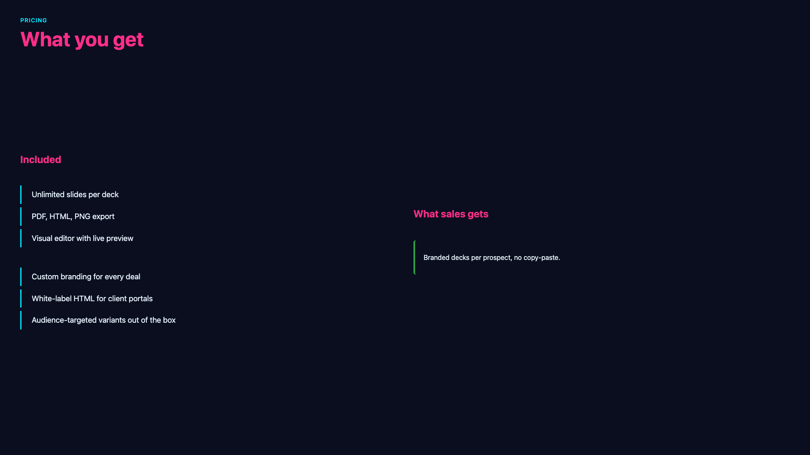
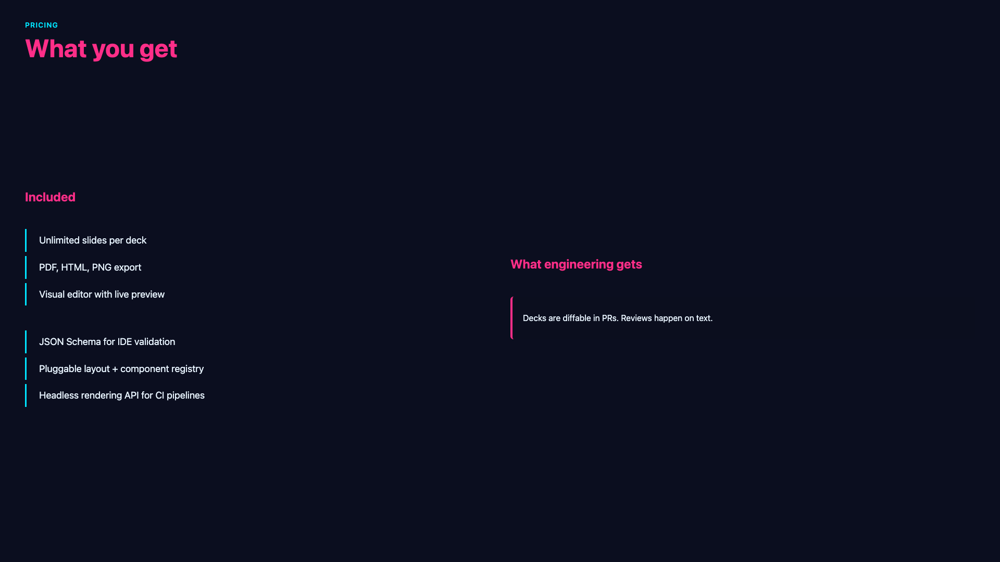
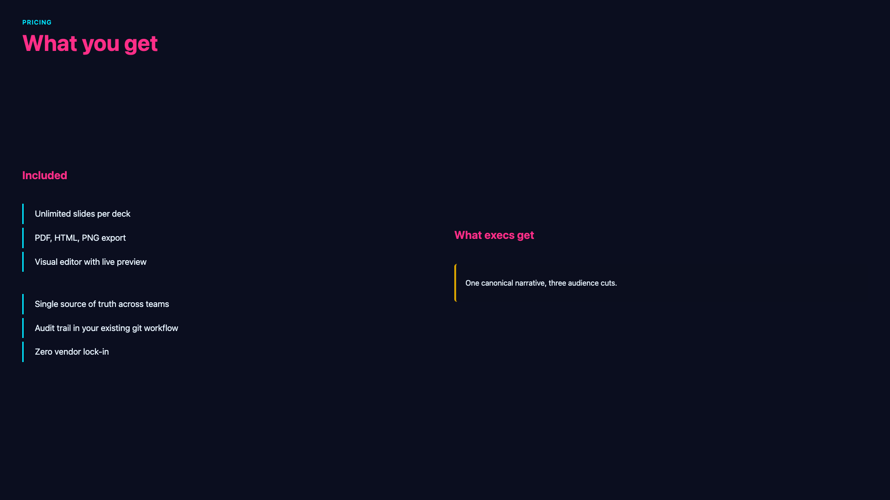

Branch by audience
Tag any slide or block with path_include / path_exclude. One source, multiple decks, zero copy-paste.

Verso is a JSON-driven presentation system with first-class path branching. Tag slides for sales, engineering, or execs, and ship the same deck to each.
{ "id": "04-pricing", "title": "Pricing", "layout": "two-col", "transition": "slide-left", "path_include": ["sales", "exec"], "content": [ { "type": "heading", "text": "$49 / month, per seat" }, { "type": "bullets", "items": [ "Unlimited decks and paths", "PDF, HTML, PNG export", "Visual editor and live reload" ]} ] }
Verso treats your deck like a codebase: plain JSON, diffable in git, versionable, and authored by humans or LLMs.
Tag any slide or block with path_include / path_exclude. One source, multiple decks, zero copy-paste.
Every slide is a plain JSON file. Diffable, scriptable, AI-writable. The visual editor is a UI on top of the same files.
PDF for print, single-file HTML for sharing, PNG for embedding. All driven by the same renderer, all pixel-identical.
Content, two/three-col, image-left/right, hero, full-image, cover, section, closing, agenda (auto-built), compare, stats, big-number, quote, timeline.
Fade, slide, zoom, flip, iris, wipe, pop, blur. Per-slide, opt-in. Respects prefers-reduced-motion.
Built-in palettes plus project-local JSON themes. Color cascade: theme → deck → slide → block.
Notes pane, next-slide preview, stopwatch. Click-and-drag for a fading laser-pointer trail.
Deck-wide, with regex and case-sensitive flags. Walks every text field across slides and nested blocks.
Reference {{author}}, {{date}}, {{pathId}} anywhere in slide text. Custom keys via deck properties.
YouTube, CodeSandbox, Figma, anything iframe-shaped. Static fallback when exported to PDF.
DRAFT, CONFIDENTIAL, your client's name. Three positions, opacity slider, on every render path.
Each pair: the JSON on one side, the rendered slide on the other. Same source, no surprises.


Tag any slide or block with path_include. The editor's Paths view shows the whole deck as a timeline: shared cards on the spine, audience-specific cards on branched lanes, and a colored line threading through every path.



// slides/05-paths.json { "layout": "two-col", "content": [ /* shared blocks have no path filter and render everywhere */ { "type": "heading", "text": "Included" }, { "type": "bullets", "items": [ /* core features */ ]}, /* path_include tags scope a block to one audience */ { "type": "bullets", "path_include": ["sales"], "items": [ /* … */ ]}, { "type": "bullets", "path_include": ["engineering"], "items": [ /* … */ ]}, { "type": "bullets", "path_include": ["exec"], "items": [ /* … */ ]} ] }
Every built-in theme is a small JSON file. Switch with one click, or write your own.


No accounts, no cloud, no proprietary file format. It's npm install, edit JSON, build.
1. Install the CLI
npm install -g @starside-io/verso-cli
2. Scaffold a deck from a template
verso init my-deck --template layouts-gallery cd my-deck
3. Open the visual editor or edit JSON directly
verso edit # full editor with live preview verso dev # just the viewer, watch JSON
4. Export when you're done
verso build --format pdf
verso build --format html # single self-contained file
Open source. Apache 2.0. Maintained by starside.io.